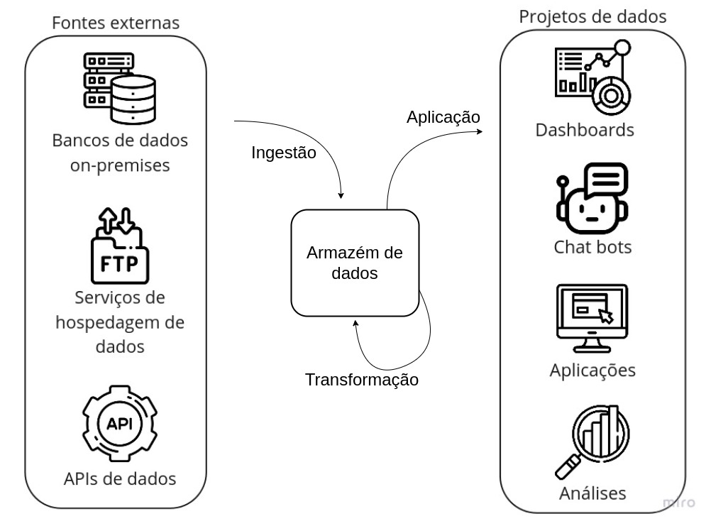
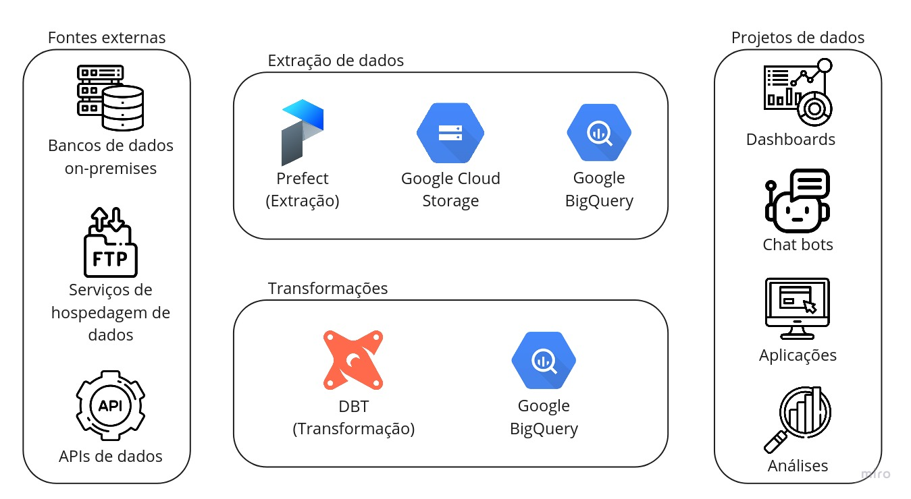
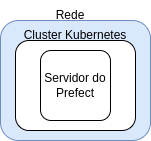
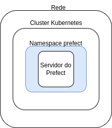
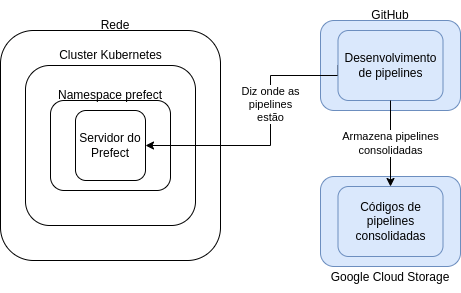
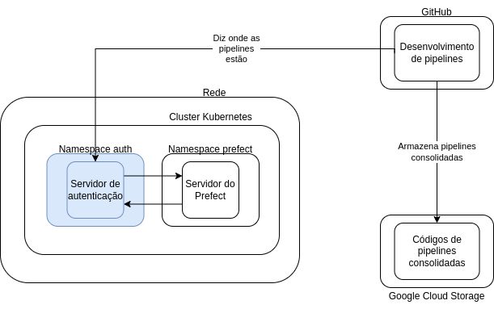
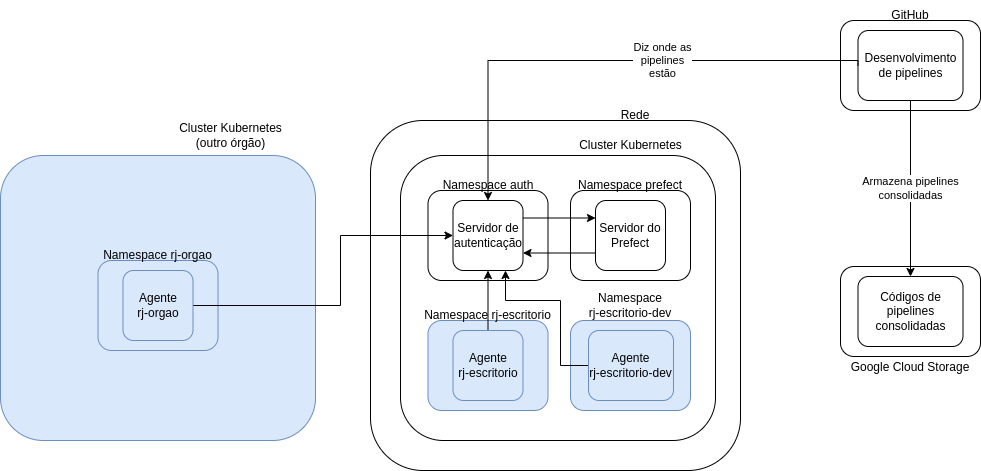
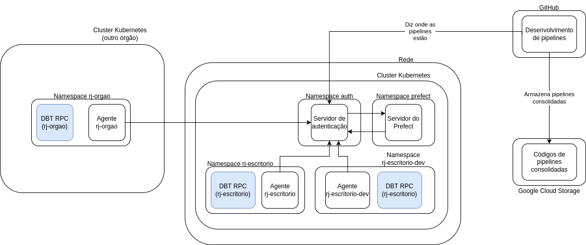
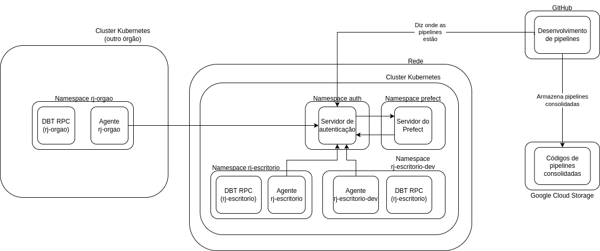

Visão geral da infraestrutura
E aí, quer entender melhor nossa infraestrutura de dados, os componentes selecionados, como interagem entre si e onde estão hospedados? Então vamos lá! 👨💻
Introdução ao fluxo de dados
Não há nada extravagante em nosso fluxo de dados, na realidade, ele é tão intuitivo quanto pode ser. No entanto, é muito importante entender cada etapa para que seja possível compreender o funcionamento da infraestrutura como um todo.
Então, vamos colocar aqui um diagrama que ajudará a entender por onde o dado transita e no que consistem as etapas:

Como estamos falando sobre a infraestrutura de dados, vamos focar única e exclusivamente na parte central desse diagrama, ou seja, as três grandes etapas - Ingestão, Transformação e Aplicação - e o bloco central, o Armazém de Dados.
Armazém de dados
Como o próprio nome já diz, é o local onde os dados são armazenados. No entanto, não é uma ferramenta tão simples quanto o nome faz parecer, dado que é o componente central do fluxo de dados e, portanto, deve suportar uma grande variedade de operações, além de uma imensa capacidade de processamento e armazenamento, visto que os dados podem ter tamanhos e prioridades diferentes.
Mais especificamente, uma ferramenta de armazém de dados para nossa infraestrutura deve possuir as seguintes funcionalidades:
- Capacidade de armazenamento e processamento "ilimitada": não queremos nos preocupar em qual o tamanho do dado que vamos armazenar, nós o queremos e ponto!
- Otimização de processamento via particionamento e correlatos: para dados de grande volume, é sempre interessante recorrer a mecanismos de particionamento e semelhantes para otimizar o processamento e, consequentemente, os custos de uma consulta.
- Suporte a SQL: nós queremos usar a linguagem de consulta mais popular e acessível até o momento.
- Funções de análise geoespacial: por se tratar de dados da cidade são, em maioria, geolocalizados. Assim, ter funcionalidades de análise geoespacial é fundamental.
- Governança simplificada: ter uma interface amigável para gerir o armazém de dados é fundamental.
- Conexões com plataformas de desenvolvimento de dashboards: não adianta ter dados se não conseguimos visualizá-los ou usá-los.
- Possibilidade de disponibilizar os dados publicamente: afinal, queremos que a comunidade acesse!
Ingestão
A ingestão é o ato de obter um dado e trazê-lo para seu ambiente. Ela consiste em duas subetapas: a extração e o armazenamento.
A Extração é ato de adquirir o dado a partir de alguma fonte, como um banco de dados, uma API ou um arquivo qualquer. A partir daí, o Armazenamento é a etapa de salvar esse dado em algum lugar como, por exemplo, um computador ou um armazém de dados.
Se você parar para pensar, coisas rotineiras podem ser enxergadas como ingestão: ao consultar seu contracheque, por exemplo, você está realizando uma extração, ao requerer os dados no website de consulta, e um armazenamento, ao baixá-lo para seu computador.
Transformação
A transformação de dados é um conceito extremamente abrangente, então sua definição deve ser suficientemente ampla: modificar um dado buscando um objetivo. Então, qualquer modificação no dado original é considerada uma transformação. Seguindo o exemplo do contracheque, uma possível transformação seria a conversão de moeda, caso você precisasse de um contracheque em dólar.
Note que, após a transformação, uma nova etapa de armazenamento é realizada. Porém, esse dado transformado poderá sobrescrever o original, ou seja, o dado original não será mais acessível, ou coexistir com ele.
Aplicação
Essa é a última etapa de um fluxo de dados. Ela consiste em utilizar o dado para algum fim. Aqui se encontram coisas como dashboards, aplicativos, chat bots e outros sendo, então, um pouco fora do escopo desse guia.
Mas seguindo nosso exemplo do contracheque, uma possível aplicação seria a utilização dos dados do seu contracheque para a declaração do IRPF.
Considerações finais
Como é possível notar pelo próprio diagrama, é possível iterar nesse fluxo indefinidamente. Então, grandes projetos de dados não usam somente um dado contido no armazém, mas múltiplos, fazendo transformações para uní-los e obter informações mais ricas. Também, as transformações podem ocorrer indefinidamente, até que se obtenha o resultado esperado.
Apresentação dos componentes
Vamos incrementar aquele diagrama!

Aqui temos os componentes que compõem a infraestrutura de dados. Na parte de "Extração de dados", temos o Prefect para realizar a extração e Google Cloud Storage Google BigQuery para armazenamento. Logo mais, você irá entender o que cada um faz e como foram selecionados.
Já na parte de "Transformações", temos ali o DBT para realizar as transformações e novamente o Google BigQuery para armazenamento.
Como chegamos a isso
Muitos pontos foram levantados durante o levantamento das ferramentas. Dentre eles, selecionamos um conjunto dos que julgamos mais adequados para nossa infraestrutura que, de forma simplificada, é o seguinte:
- Escalonamento: todos os componentes devem funcionar bem para cargas de trabalho pequenas, mas devem ter a possibilidade de suportar cargas de trabalho enormes.
- Liberdade: como estamos hospedando nossos serviços em nuvem, gostaríamos de ter a possibilidade de transitar entre provedores com facilidade. Por isso, sempre que razoável, optamos por usar software livre.
- Possibilidades: poder usufruir por completo de uma linguagem de programação, como Python, ou de consulta, como SQL, permite fazer trabalhos extremamente complexos e replicáveis.
- Descentralização: hospedar cargas de trabalho de todos os órgãos da prefeitura em servidores separados permite um maior controle sobre os custos de cada órgão e dificulta condições em que cargas de trabalho de um órgão poderia onerar outro.
- Simplicidade: menos é mais. Um sistema com poucos componentes é mais fácil de manter e entender.
Claro que esses itens são muito abstratos e, sabendo disso, construímos um instrumento de avaliação de serviços com diversos fatores quantificáveis e, a partir dele, conduzimos uma consulta pública com vários provedores de serviços em nuvem, para que propusessem soluções para nosso problema.
Após a análise, os componentes escolhidos foram os explicitados no diagrama acima. Agora vamos conversar sobre cada um deles e explicar como eles funcionam.
Extração (Prefect)
Como mencionado anteriormente, para realizar a extração de dados, a ferramenta selecionada foi o Prefect. Essa é uma ferramenta de código aberto, que permite a automação de quaisquer tarefas através de sua API, em Python.
Por possuir uma interface muito simples de usar, é extremamente fácil modificar seu código para usufruir de suas funcionalidades. Mas, para nós, além da linda interface que ele possui, os dois itens que mais foram convidativos para nós foram:
- Confiança: é muito fácil lidar com falhas no Prefect, você não vai quebrar todo seu fluxo de dados se algo ruim acontecer. Além disso, em nossos testes preliminares, conseguimos executar mais de 10 mil pipelines por dia, consumindo poucos recursos, sem problemas.
- Modelo híbrido de execução: esse deve ser o item mais apelativo para todos que aderem o Prefect. O modelo híbrido dele permite que você tenha o servidor hospedado em um local, seu código em outro e o ambiente de execução em um terceiro. Existe uma clara separação de papeis que garante a segurança da execução do código e, de tabela, uma completa descentralização: podemos executar pipelines de um órgão em um servidor, outro em outro e, ao mesmo tempo, conseguir enxergar todas elas em uma única interface.
E quando eu falo sobre facilidade de uso, eu realmente quero dizer que é muito fácil. Olha só esse exemplo: suponha que você tenha um código de extração de dados em Python puro, dá só uma olhada em como portá-lo para o Prefect.
=== "Python puro"
```py
def extrair_dados(url):
response = requests.get(url)
data = response.json()
return data
def montar_dataframe(data):
df = pd.DataFrame(data)
return df
def salvar_dados(dataframe):
dataframe.to_csv('dados.csv')
def main():
url = 'https://url.da.api.que.voce.quer.extrair'
data = extrair_dados(url)
dataframe = montar_dataframe(data)
salvar_dados(dataframe)
```
=== "Prefect"
```py
from prefect import task, Flow
@task
def extrair_dados(url):
response = requests.get(url)
data = response.json()
return data
@task
def montar_dataframe(data):
df = pd.DataFrame(data)
return df
@task
def salvar_dados(dataframe):
dataframe.to_csv('dados.csv')
with Flow("main") as flow:
url = 'https://url.da.api.que.voce.quer.extrair'
data = extrair_dados(url=url)
dataframe = montar_dataframe(data=data)
salvar_dados(dataframe=dataframe)
```
Bom demais, né?
Transformações (DBT)
Aqui é onde a galera do SQL se empolga. O DBT é uma ferramenta de código aberto, que permite a definição de modelos de dados em linguagem SQL. Então, em outras palavras, você pode escrever uma query e, usando o DBT, materializar os resultados dessa query em diferentes formas e, o que é mais legal, em diferentes plataformas.
Assim, com a mesma query, você pode criar tabelas e views em diferentes plataformas. E não só isso, as tabelas podem ser materializadas de maneiras diferentes, como, por exemplo, de forma incremental, que consiste em adicionar novas linhas ao final de uma tabela.
Além de tudo, você pode parametrizar suas queries para que elas sejam executadas com diferentes valores de entrada. Não bastante, você pode especificar configurações de particionamento, dentre outras, diretamente no seu modelo de dados. Dá uma olhada só nesse exemplo:
{{
config(
materialized='table',
partition_by={
"field": "data_particao",
"data_type": "date",
"granularity": "month",
}
)
}}
SELECT
*
FROM `datario.dataset_id.table_id`
Pode relaxar, você não precisa entender tudo desse modelo ainda, teremos guias para isso. Mas, apesar
de curto, tem muita coisa rolando nesse modelo aí! Estamos especificando para ele que deve se materializar
em formato de tabela nativa com o materialized='table', e estamos especificando que deve ser particionado
por data na coluna data_particao com uma granularidade mensal. Pouquíssimas linhas e simplesmente
funciona!
Armazenamento (Google Cloud Storage e Google BigQuery)
Eu sei o que você vai dizer:
Mas você disse "sempre que razoável, optamos por usar software livre"
Sim, exatamente, sempre que razoável. Porém, no caso do armazenamento, principalmente, as ferramentas apresentadas pela Google atenderam todos os requisitos que havíamos levantado, além de reduzirem o número de componentes para dois ao invés de múltiplos open-source que teríamos que manter em conjunto. Ok, vamos voltar ao que viemos fazer: apresentar os componentes.
-
Google Cloud Storage é um serviço de armazenamento de objetos. Então, através de uma API, é possível fazer upload de qualquer tipo de arquivo, configurar permissões para ele e, caso tenha acesso, baixá-lo novamente. Além disso, você pode utilizá-lo como um data lake em sua definição original - você pode armazenar arquivos na mesma estrutura de partições Hive e obter seus dados particionados para consulta. Você, então, pode consultar seus dados com SQL no console do BigQuery.
-
Google BigQuery é um serviço de data warehouse serverless. Ele permite análises escalonáveis em petabytes (mil terabytes) de dados. Como mencionado anteriormente, você pode consumir dados de data lakes hospedados no Google Cloud Storage mas, ao mesmo tempo, pode criar tabelas nativas, que possuem performance muito superior.
E aqui, então, finalizamos a apresentação de nossos componentes. Mas calma, ainda tem muita coisa a ser dita aqui, vamos em frente.
Como estão hospedados
Agora que você conheceu os componentes, vamos entender onde eles estão. A medida que essa seção avança, iremos criar um diagrama e incrementá-lo aos poucos, até chegar na visão completa. Você vai notar que as partes inseridas no diagrama possuem a cor azul, assim fica mais fácil notar a diferença.
Prefect
Devido à separação de papéis nativa do Prefect, vamos separar essa subseção em três partes:
- O servidor: como estamos hospedando nosso back-end do Prefect, será mostrado onde ele está e adaptações que fizemos para seu funcionamento seguro.
- Os códigos: mostraremos onde ele fica (todos podem acessá-lo!)
- Os ambientes de execução: se você chegou a ler sobre o modelo híbrido do Prefect, sabe que ele depende de agents para a execução de pipelines. Se você ainda não sabe do que se trata, tudo certo, vamos abordar essa parte aqui também.
Servidor
Esse subcomponente é o responsável por saber onde o código mora, suas versões, agendar execuções, armazenar histórico, exibir logs e relatórios sobre o funcionamento do Prefect como um todo. Porém, em sua versão open-source, nativamente, ele não possui qualquer tipo de camada de autenticação para realizar qualquer uma dessas operações (mas vamos abordar isso em breve aqui).
Então, para hospedá-lo de forma que pudéssemos ter redundância e facilidade para escalar, optamos por usar um cluster Kubernetes. Não é do escopo desse guia explicar o que é um cluster Kubernetes, mas, em poucas palavras e muito simplificadamente, pode ser visto como um grupo de máquinas que, a partir de um controlador (em software) é capaz de hospedar e gerenciar vários containers. Vamos, então, começar nosso diagrama:
Simples até demais, não é? Sim, de fato. Poderíamos até nos contentar em mostrar isso, mas faltaria muita informação para compreender como as coisas se comunicam. Então, vamos continuar. Para não exagerar nos detalhes, podemos considerar o cluster como uma única coisa, mas não podemos esquecer que ele é composto de vários computadores e que, necessariamente, esse computadores têm que estar conectados a uma rede (isso permite que eles se comuniquem entre si e com a internet). Então, vamos incluir essa parte do diagrama:

Sem problemas até aqui, vamos lá: um conceito que também é utilizado em clusters Kubernetes é o de namespace: um espaço de nomes que separa ambientes em um cluster. Claro, coisas hospedadas em um namespace podem ser acessadas por outros namespaces, mas, devido a essa hierarquia, nomes iguais não irão conflitar entre si.
Antes de incluir no diagrama, vamos a um exemplo: suponha que você deseje hospedar, em um mesmo cluster,
dois servidores (que podem ser coisas completamente distintas). Se você colocar o nome servidor em um
e quiser usar servidor no outro, como ele poderia distinguir ambos? A resposta para isso é o namespace:
basta você hospedar cada um em um namespace diferente. Assim, quando você perguntar quem é servidor,
você terá que informar o namespace e, assim, não haverá conflito. Claro que há outras possibilidades
a serem exploradas com namespaces, mas vamos manter isso para o momento e incluí-lo no diagrama:

Pode não parecer fazer diferença agora, mas vai fazer sentido mais pra frente, eu juro.
Código
Essa parte é um pouco mais leve, vamos lá: o código de todas as nossas pipelines está versionado, publicamente, no GitHub. Você pode acessá-lo em https://github.com/prefeitura-rio/pipelines. Porém, para armazenamento que o Prefect usa, o código é hospedado no Google Cloud Storage.
Então, o fluxo de desenvolvimento de código ocorre todo no GitHub e, quando alguma alteração está aprovada para ser publicada, ela automaticamente é salva no Google Cloud Storage, que os ambientes de execução do Prefect usam para buscar o código. Vale ressaltar que quem informa ao ambiente de execução onde o código se encontra é o servidor do Prefect. Porém, ele só sabe onde o código está, não tem acesso a ele. Incluindo isso no diagrama, vamos lá:

Está ficando complexo! Note que ainda não abordamos como acontece a comunicação entre o GitHub e o servidor do Prefect, mas estamos chegando lá.
Ambiente de execução
O ambiente é gerido por agents, responsáveis por "perguntar" ao servidor do Prefect se há alguma pipeline que precisa ser executada e, se houver, lançar uma execução para ela. Porém, nem toda execução pode ser lançada por qualquer agente. A separação, então, ocorre através de labels: cada agente pode ser associado a um ou mais labels, que são usados para identificar qual pipelines (também associadas a labels) ele pode executar.
Entendido isso, vamos entender como ele se comunica com o servidor do Prefect. Lembra que comentei ali em cima que a versão open-source do servidor do Prefect não possui camada de segurança nativa? Pois é, não queremos que isso fique exposto, certo? Então, criamos uma camada de segurança para ele. Não vou me aprofundar muito nesse assunto, pois não é o escopo do guia, então vou incluí-la no diagrama e corrigí-lo com relação a comunicação do GitHub para que possamos continuar:

A ideia dessa mudança do diagrama é só entender que existe uma forma segura de comunicar com o servidor do Prefect através da internet e que, consequentemente, todas as interações com o servidor do Prefect são intermediadas por um servidor de autenticação.
Mas o que isso tem a ver com o agente do Prefect?
Boa! Lembra que o agente do Prefect é o responsável por "perguntar" ao servidor do Prefect se há alguma pipeline que precisa ser executada? Então, para isso, ele precisa também interagir com o servidor de autenticação.
Mas falamos muito e até agora não falamos onde esses agentes estão hospedados. E aí é que vem a parte legal: em qualquer lugar! Como temos uma forma segura de comunicação com o Prefect através da internet, desde que os agentes tenham acesso à internet, eles podem estar em qualquer lugar! Então, para fins de exemplificação, vamos incluir nesse esquema aí os seguintes agentes:
rj-escritorio: um agente nosso, do Escritório de Dados. Ele vai ficar hospedado no mesmo cluster do servidor do Prefect, porém em um namespace diferente (você vai logo entender o motivo).rj-escritorio-dev: outro agente do Escritório de Dados, mas para desenvolvimento. Isso significa que, caso tenhamos desenvolvido uma pipeline que está estável, mas ainda queremos testá-la bastante antes de deixá-la definitiva, ela pode ser executada com esse agente. Ele também vai ficar hospedado em um namespace exclusivo.rj-orgao: um agente de um órgão qualquer da prefeitura. Ele vai ficar hospedado em um outro cluster Kubernetes, (nesse cenário) pertencente a outro órgão. Isso permite uma clara divisão de custos com infraestrutura, já que quem arcará com os custos das execuções de pipelines do órgão é o próprio órgão.
Incluindo no diagrama:

DBT
A hospedagem do DBT é razoavelmente simples. O modo que utilizamos para hospedá-lo é através de um servidor RPC, que contém os modelos de dados definidos e credenciais de acesso à plataforma onde ele irá operar. Então, para materializar os modelos de dados, é necessário pedir ao servidor RPC, através das pipelines do Prefect, que fará essa tarefa e informará se foi bem sucedida ou não.
Os modelos de dados estão definidos em repositórios do GitHub, um para cada órgão. Os nomes dos
repositórios seguem o padrão queries-rj-<nome do órgão>. Então, por exemplo, o repositório
queries-rj-escritorio contém os modelos
de dados do órgão Escritório de Dados.
Além desses repositórios, existe um repositório queries-datario, que define os modelos de dados que serão publicados no data.rio.
O que acontece é que, quando são realizadas alterações nesses modelos de dados, uma instância atualizada
do servidor RPC é criada exatamente no mesmo cluster e namespace onde o agente do Prefect correspondente
está hospedado. Então, por exemplo, para o repositório queries-rj-escritorio,
será criado um servidor RPC atualizado para os namespaces rj-escritorio e rj-escritorio-dev, já
mostrados acima.
E é aqui que o conceito de namespace fica mais relevante, olha só:
- Para materializar um modelo de dados, as pipelines precisam solicitar ao servidor RPC do DBT
- As pipelines são executadas no mesmo namespace onde o agente do Prefect está hospedado
- O servidor RPC do DBT é criado para cada namespace
Então, se eu estiver no namespace rj-escritorio e perguntar pelo servidor RPC do DBT, eu terei acesso
somente aos modelos de dados definidos em queries-rj-escritorio.
Analogamente, se eu estiver nesse namespace rj-orgao, eu terei acesso somente aos modelos de dados
desse órgão.
Então vamos incluir esses servidores RPC no diagrama:

Google Cloud Storage e Google BigQuery
Como esses serviços são gerenciados pela Google, não cabe a nós criar instâncias deles. Então, também não fazem parte do diagrama de hospedagem.
Assim, nosso diagrama final fica assim:

Comunicação e interações
Recapitulando e unindo todas as informações que trouxemos até aqui, o fluxo completo de funcionamento da infraestrutura é o seguinte:
- Desenvolvemos o código para uma pipeline de dados no repositório prefeitura-rio/pipelines
- O GitHub armazena essas pipelines no Google Cloud Storage e diz ao Servidor do Prefect onde elas estão.
- Desenvolvemos códigos para transformações de dados em um repositório do estilo
queries-rj-<nome do órgão>(por exemplo, queries-rj-escritorio). - O GitHub cria uma instância do DBT RPC para o namespace correspondente.
- O Agente do Prefect pergunta ao Servidor do Prefect se há alguma pipeline para ser executada.
- O Servidor do Prefect informa a ele qual pipeline deve ser executada.
- O Agente do Prefect lança a execução dessa pipeline, que pode ter um ou mais dos seguintes passos: (1) extração dos dados; (2) upload dos dados para o Google Cloud Storage; (3) transformação dos dados em tabelas nativas do Google BigQuery (usando os modelos do DBT);
Vale, ainda, ressaltar como o upload dos dados para o Google Cloud Storage e a criação de tabelas
externas no Google BigQuery são feitos. Para isso, usamos o pacote basedosdados (disponivel
em Python ou CLI). Os dados irão passar por nossos componentes de armazenamento:
- Google Cloud Storage (GCS): local onde serão armazenados os arquivos brutos, geralmente
.csv, mas também aceita outros formatos como.parquete arquivos compactados. - Google BigQuery (BQ): nossas tabelas serão separadas em dois datasets: o de staging, que terá o
nome no formato
dataset_id_staging, contém as tabelas externas geradas a partir dos dados brutos hospedados no GCS. Já o de produção, com nome no formatodataset_id, contém as tabelas nativas já tratadas e padronizadas geradas pelo DBT. Vale ressaltar que o BQ possui 3 tipos diferentes de tabelas; - Tabelas Externas: Uma tabela externa funciona como uma tabela padrão do BigQuery. Os metadados da tabela, incluindo o esquema, são armazenados no BigQuery, mas os dados em si residem na fonte externa,como por exemplo GCS, Google Sheets, Google Drive, entre outros. Para mais informações, consulte como consultar fontes de dados externas.
- Tabelas Nativas: Uma tabela nativa tem os dados armazenadas diretamente no BQ. Essas tabelas são extremamente rápidas, porem possuem apenas um nivel de particionamento com 4 mil partições.
- Views: Uma view é uma tabela virtual definida por uma consulta SQL. Para mais informações, consulte Como criar visualizações.
A primeira etapa realizada pelo pacote basedosdados é o upload dos dados para o GCS. Lá, os
dados serão salvos no bucket do projeto com o seguinte caminho: project_id/dataset_id/table_id/data.csv.
Uma vez com os dados no GCS, são criados os dois datasets no BQ - de producão (dataset_id)
e staging (dataset_id_staging). Na ultima etapa, a tabela externa é criada no dataset de staging
(dataset_id_staging.table_id), gerando um link entre os dados brutos armazenados no GCS e o BQ.
Esse link permite a adição de novos dados no GCS sem a necessidade de recriação das tabelas do
BQ, ao fazer o append de um novo dado no GCS ele automaticamente já estará disponível para
consulta no BQ.
Assim a tabela está pronta para ser tratada e padronizada utilizando o DBT. E você aprenderá a fazer isso em outro guia!